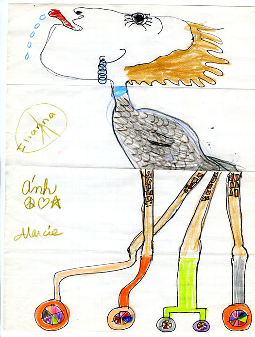

Making Movies 2.0
Each week(ish) we'll make different kinds of movies
Round 1
Making scenes/movies with minimal talking
The weird, wordless stuff I make…
Examples of scenes
Mining our own experience

Swap stories
Think of story
Record on phone (60-90s)
Swap 1X adding sounds
Swap 2X adding visuals
They make visuals
Example Story